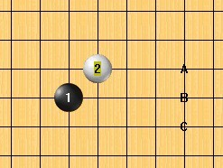

明教大妖刀专题悬赏贴
首页
妖刀天下
#1 <font color="blue">明教大妖刀专题悬赏贴</font> 作者：失落刀 发表时间：2012-4-21 22:38:07
大妖刀还有哪些开局白没有做到\一打白必胜？
嘿嘿，跟帖可能赚威望（注明白4）。
如果大家有兴趣的话，明教将选择部分，并做人民币悬赏！
悬赏说明，将在跟帖楼层予以编辑说明，同时本楼也将同步更新悬赏动态。
让我们开始吧！
［ 空恨社小仙 于 2012-4-22 23:53:22 时花20金币送鲜花一朵］
白棋不能完全必胜所有5的大妖刀，目前有4个。见下图：

本四个大妖刀欢迎跟帖探讨。
备注：以上两图由小仙提供。
［此帖子已被 失落刀 在 2012-5-6 21:45:16 编辑过］
#2 Re:失落刀【==明教大妖刀专题悬赏贴==】 作者：空恨社小仙 发表时间：2012-4-21 22:40:52
悬赏题四个，如图：
悬赏题一、巨寒星求必胜所有5的白4地毯。悬赏金待定。
悬赏题二、巨溪月求必胜所有5的白4地毯。悬赏金待定。
悬赏题三、巨恒星求必胜所有5的白4地毯。悬赏金待定。
悬赏题四、巨水月求必胜所有5的白4地毯。悬赏金待定。
巨水月已经在59楼告知完全解决。
［此帖子已被 失落刀 在 2012-5-6 22:11:53 编辑过］
［此帖子已被 失落刀 在 2012-6-4 6:35:52 编辑过］
#3 Re:失落刀【==明教大妖刀专题悬赏贴==】 作者：空恨社小仙 发表时间：2012-4-21 22:52:54
或者还有更好的四没发现?
［ 失落刀 于 2012-4-22 11:19:38 时奖励此帖[金币加 100 威望加1］
#4 Re:明教大妖刀专题悬赏贴 作者：蹲街丶式寂寞 发表时间：2012-4-21 23:31:37
没希望。呵呵。只是发出来而已。难带还有更牛B的白4.
［ 失落刀 于 2012-4-22 11:20:25 时奖励此帖[金币加 100 威望加1］
#5 Re:明教大妖刀专题悬赏贴 作者：蹲街丶式寂寞 发表时间：2012-4-21 23:35:43
搞不出。
［此帖子已被 失落刀 在 2012-4-22 1:46:05 编辑过］
［ 失落刀 于 2012-4-22 11:20:59 时奖励此帖[金币加 100 威望加1］
#6 Re:明教大妖刀专题悬赏贴 作者：日月丽天 发表时间：2012-4-22 8:22:16
超刀就应该追求完全一打白必
有些超刀之前的二打白必胜4不一定是最终追求完全一打白必胜的选择了
［ 失落刀 于 2012-4-22 11:21:38 时奖励此帖[金币加 100 威望加1］
#7 Re:明教大妖刀专题悬赏贴 作者：陶涛业余 发表时间：2012-4-22 13:44:23
有好多超大妖刀的局面确实白棋必胜，但是白棋的正确4的位置很特殊，不是常人能想到的，甚至于对应每一个黑5手的位置，白6手想必胜都只有唯一的点，而且位置也很特殊，都不尽相同。一旦下错，将陷入黑优甚至黑胜的局面
所以个人感觉超大妖刀的下棋的趣味在于骗，如果谱全部研出来了，就失去了妖刀局的乐趣，就只能作为理论上研究理解棋理的作用了
［此帖子已被 陶涛业余 在 2012-4-22 13:45:47 编辑过］
［ 失落刀 于 2012-4-22 14:06:59 时花20金币送鲜花一朵］
#8 Re:明教大妖刀专题悬赏贴 作者：山城刀客 发表时间：2012-4-22 15:30:45
想请教各位，这个大刀什么结论，白棋必胜吗？
［ 失落刀 于 2012-4-22 21:56:52 时花20金币送鲜花一朵］白棋必胜，见下楼。
［此帖子已被 失落刀 在 2012-4-22 21:57:41 编辑过］
#9 Re:山城刀客【==Re:明教大妖刀专题悬赏贴==】 作者：冰雪笑醉 发表时间：2012-4-22 15:38:39
这个4能必胜吧？
［此帖子已被 冰雪笑醉 在 2012-4-22 15:42:30 编辑过］
［ 空恨社小仙 于 2012-4-22 21:27:06 时花20金币送鲜花一朵］
［ 失落刀 于 2012-4-22 21:58:17 时花20金币送鲜花一朵］能。
［此帖子已被 失落刀 在 2012-4-22 21:58:48 编辑过］
［ 山城刀客 于 2012-4-22 23:02:40 时花20金币送鲜花一朵］
#10 Re:失落刀【==明教大妖刀专题悬赏贴==】 作者：空恨社小仙 发表时间：2012-4-23 0:00:24
这个五没拆出来,不知道有没有人地毯掉了,或者有更强的四...
#11 Re:空恨社小仙【==Re:失落刀【==明教大妖刀专题悬赏贴==】==】 作者：冰雪笑醉 发表时间：2012-4-23 0:31:25
这个4会不会更强点呢？
#12 Re:明教大妖刀专题悬赏贴 作者：自来水 发表时间：2012-4-23 7:36:00
同LS
#13 Re:明教大妖刀专题悬赏贴 作者：月光公主 发表时间：2012-4-23 8:52:44
小仙请看
大外溪月这个4白必胜
［ 空恨社小仙 于 2012-4-23 14:03:12 时花20金币送鲜花一朵］
［ 失落刀 于 2012-4-23 19:06:16 时奖励此帖[金币加 100 威望加1］
#14 Re:空恨社小仙【==Re:失落刀【==明教大妖刀专题悬赏贴==】==】 作者：陶涛业余 发表时间：2012-4-23 10:45:48
引用：
原文由 空恨社小仙 发表于 2012-4-23 0:00:24 :
这个五没拆出来,不知道有没有人地毯掉了,或者有更强的四...
这个5没结论，白防下黑胜，防上白小优，但是没拆出来［此帖子已被 陶涛业余 在 2012-4-23 10:53:14 编辑过］
#15 Re:明教大妖刀专题悬赏贴 作者：山城刀客 发表时间：2012-4-23 12:06:24
大刀难局还多着呢，比如这个。
或许，别的4可以？
#16 Re:山城刀客【==Re:明教大妖刀专题悬赏贴==】 作者：空恨社小仙 发表时间：2012-4-23 14:16:08
好的,你那几个点我拆一下看看
#17 Re:山城刀客【==Re:明教大妖刀专题悬赏贴==】 作者：空恨社小仙 发表时间：2012-4-23 14:51:40
［ 山城刀客 于 2012-4-23 18:57:30 时花20金币送鲜花一朵］
［ 山城刀客 于 2012-4-23 18:57:46 时花20金币送鲜花一朵］
#18 Re:山城刀客【==Re:明教大妖刀专题悬赏贴==】 作者：空恨社小仙 发表时间：2012-4-23 14:54:20
基本就是这思路,应试可以必,谱还没时间扫,还有什么难点请发来这里一起讨论
#19 Re:空恨社小仙【==Re:山城刀客【==Re:明教大妖刀专题悬赏贴==】==】 作者：空恨社小仙 发表时间：2012-4-23 15:39:01
就2上面的五杀不了,其它都确定能杀了...
#20 Re:明教大妖刀专题悬赏贴 作者：蹲街丶式寂寞 发表时间：2012-4-23 21:31:11
回来过来搬东西，顺便上下网。这个局面是根据棋谱走的。可是白也不好下啊
#21 Re:蹲街丶式寂寞【==Re:明教大妖刀专题悬赏贴==】 作者：空恨社小仙 发表时间：2012-4-23 22:46:49
貌似流星三打... 传说流星三打就是这样白胜的,不过只是传说没见过谱...
#22 Re:蹲街丶式寂寞【==Re:明教大妖刀专题悬赏贴==】 作者：空恨社小仙 发表时间：2012-4-23 22:54:17
简单杀....
［ 失落刀 于 2012-4-23 23:09:13 时奖励此帖[金币加 100 威望加1］
#23 Re:空恨社小仙【==Re:蹲街丶式寂寞【==Re:明教大妖刀专题悬赏贴==】==】 作者：空恨社小仙 发表时间：2012-4-23 23:07:09
走到这里终结者就可以完全解决了
#24 Re:失落刀【==明教大妖刀专题悬赏贴==】 作者：空恨社小仙 发表时间：2012-4-23 23:28:33
超大金星,这个四唯一的五没解决掉,谁提供更好的四?
#25 Re:明教大妖刀专题悬赏贴 作者：蹲街丶式寂寞 发表时间：2012-4-24 0:23:43
杀不出杀不出杀的出 呼呼了。
呼呼了。
［此帖子已被 蹲街丶式寂寞 在 2012-4-24 0:36:19 编辑过］
［ 失落刀 于 2012-4-24 7:19:11 时奖励此帖[金币加 100 威望加1］
#26 Re:蹲街丶式寂寞【==Re:明教大妖刀专题悬赏贴==】 作者：空恨社小仙 发表时间：2012-4-24 0:51:31
#27 Re:空恨社小仙【==Re:蹲街丶式寂寞【==Re:明教大妖刀专题悬赏贴==】==】 作者：空恨社小仙 发表时间：2012-4-24 3:08:15
昨晚拆了一下,这个四白必胜,问题已解决...［ 失落刀 于 2012-4-24 7:19:59 时奖励此帖[金币加 100 威望加1］
［ 月光公主 于 2012-4-24 8:57:43 时花20金币送鲜花一朵］
［ 山城刀客 于 2012-4-26 9:42:18 时花20金币送鲜花一朵］
#28 Re:明教大妖刀专题悬赏贴 作者：月光公主 发表时间：2012-4-25 20:56:48
建议这个4
［ 失落刀 于 2012-4-25 20:58:44 时奖励此帖[金币加 100 威望加1］
#29 Re:明教大妖刀专题悬赏贴 作者：月光公主 发表时间：2012-4-25 21:23:59
#30 Re:明教大妖刀专题悬赏贴 作者：月光公主 发表时间：2012-4-25 21:34:40
大家探讨棋型，关注强四变化，研究白必
［ 空恨社小仙 于 2012-4-25 21:47:47 时花20金币送鲜花一朵］
#31 Re:明教大妖刀专题悬赏贴 作者：失落刀 发表时间：2012-4-25 21:51:35
#32 Re:明教大妖刀专题悬赏贴 作者：失落刀 发表时间：2012-4-25 21:54:30
~~~~~~~~~~~~~~~~~~~~~~~~~~~~~~
#33 Re:明教大妖刀专题悬赏贴 作者：月光公主 发表时间：2012-4-25 22:12:19
#34 Re:明教大妖刀专题悬赏贴 作者：失落刀 发表时间：2012-4-25 22:20:35
［ 蹲街丶式寂寞 于 2012-4-29 22:08:34 时花20金币送鲜花一朵］
［ 月光公主 于 2012-4-29 22:35:34 时花20金币送鲜花一朵］
#35 Re:明教大妖刀专题悬赏贴 作者：失落刀 发表时间：2012-4-25 22:42:34

#36 Re:明教大妖刀专题悬赏贴 作者：失落刀 发表时间：2012-4-25 22:51:41
~~~~~~~~~~~~~~~~~~~~~~~~~~~~~~~~~~~~~~~~~~~~~~~~~~

白棋不能完全必胜所有5的大妖刀，目前有5个。
［ 空恨社小仙 于 2012-4-25 22:54:19 时花20金币送鲜花一朵］
#37 Re:失落刀【==Re:明教大妖刀专题悬赏贴==】 作者：空恨社小仙 发表时间：2012-4-25 22:58:17
巨水月刀,唯一强五,用一个大跳二牵制白的进攻,白各种方式进攻最终都会遇上反击,试过几种进攻方式,最后都遇上同一个反击....别的四又暂时实在看不出强过这个四的了...［ 失落刀 于 2012-4-25 23:00:28 时奖励此帖[金币加 100 威望加1］
［ 山城刀客 于 2012-4-26 9:44:38 时花20金币送鲜花一朵］
［ 山城刀客 于 2012-4-26 9:45:13 时花20金币送鲜花一朵］
［ 山城刀客 于 2012-4-26 9:45:18 时花20金币送鲜花一朵］
#38 Re:明教大妖刀专题悬赏贴 作者：山城刀客 发表时间：2012-4-26 9:47:03
这个局面我拆过很多次，无奈放弃了，但愿将来有高手可以解决这个。
［ 空恨社小仙 于 2012-4-26 11:35:34 时花20金币送鲜花一朵］
#39 Re:明教大妖刀专题悬赏贴 作者：月光公主 发表时间：2012-4-26 10:06:45
超寒刀这个白4，黑棋还剩余几个可下的5，大家关注下
［ 空恨社小仙 于 2012-4-26 11:36:31 时花20金币送鲜花一朵］
［ 失落刀 于 2012-4-26 18:23:44 时花20金币送鲜花一朵］
［ 失落刀 于 2012-4-26 18:28:34 时奖励此帖[金币加 100 威望加1］
#40 Re:蹲街丶式寂寞【==Re:明教大妖刀专题悬赏贴==】 作者：拈棋居 发表时间：2012-4-27 0:32:36

希望对你有帮助
#41 Re:明教大妖刀专题悬赏贴 作者：拈棋居 发表时间：2012-4-27 0:42:49
这个怎么杀的
#42 Re:明教大妖刀专题悬赏贴 作者：蹲街丶式寂寞 发表时间：2012-4-29 22:06:31
40楼跟41楼的图都挂了。
五个未解决 的斜指A点，我的应该解决了。应该不难的。如下图：
［ 山城刀客 于 2012-4-29 22:28:16 时花20金币送鲜花一朵］
［ 空恨社小仙 于 2012-4-30 3:01:47 时花20金币送鲜花一朵］
［ 失落刀 于 2012-4-30 7:49:27 时奖励此帖[金币加 100 威望加1］
#43 Re:明教大妖刀专题悬赏贴 作者：蹲街丶式寂寞 发表时间：2012-4-29 22:20:26
39楼，月光公主发的局面，我也弄过，佩服您的耐心。我是太烦交换了。懒的弄了。相信你的思路非常强大。
山城刀客的那个未解五个难点的斜指C点，我还未看见有人下过，没弄，跟着大师们学习下。
［此帖子已被 蹲街丶式寂寞 在 2012-4-29 22:23:19 编辑过］
#44 Re:明教大妖刀专题悬赏贴 作者：失落刀 发表时间：2012-4-29 22:56:58
42楼的我没有拆过，截图看看。
#45 Re:明教大妖刀专题悬赏贴 作者：蹲街丶式寂寞 发表时间：2012-4-29 23:43:11
我不会截图，这个局面我做的全部都是c了，已经地毯。
#46 Re:明教大妖刀专题悬赏贴 作者：棋元道 发表时间：2012-4-29 23:55:25
这个不会
#47 Re:明教大妖刀专题悬赏贴 作者：棋元道 发表时间：2012-4-29 23:59:55
这个4白必胜［ 失落刀 于 2012-4-30 8:30:18 时奖励此帖[金币加 100 威望加1］
#48 Re:明教大妖刀专题悬赏贴 作者：棋元道 发表时间：2012-4-30 0:10:29
#49 Re:明教大妖刀专题悬赏贴 作者：蹲街丶式寂寞 发表时间：2012-4-30 0:18:37
 恩，对，这个棋谱就是我做的。棋元道有我的那个棋谱。
恩，对，这个棋谱就是我做的。棋元道有我的那个棋谱。
棋元道 不会的就留给你拆了。呵呵。
［此帖子已被 蹲街丶式寂寞 在 2012-4-30 0:19:44 编辑过］
#50 Re:明教大妖刀专题悬赏贴 作者：蹲街丶式寂寞 发表时间：2012-4-30 1:55:02
有几个不会,请指教
这两个不会
#51 Re:蹲街丶式寂寞【==Re:明教大妖刀专题悬赏贴==】 作者：空恨社小仙 发表时间：2012-4-30 3:01:24
哈哈,这个四确实必了,学习了!
［此帖子已被 失落刀 在 2012-4-30 7:51:42 编辑过］
［ 失落刀 于 2012-4-30 8:32:56 时奖励此帖[金币加 100 威望加1］
［ 山城刀客 于 2012-4-30 12:39:31 时花20金币送鲜花一朵］
［ 日月丽天 于 2012-4-30 18:30:53 时花20金币送鲜花一朵］
［ 郎情 于 2012-10-19 21:44:59 时花20金币送鲜花一朵］
#52 Re:明教大妖刀专题悬赏贴 作者：蹲街丶式寂寞 发表时间：2012-4-30 3:55:18
 姑娘您真是铁打的汉子，都这么晚了
姑娘您真是铁打的汉子，都这么晚了
#53 Re:明教大妖刀专题悬赏贴 作者：失落刀 发表时间：2012-4-30 11:20:21
这个4目前有几个5？
#54 Re:失落刀【==Re:明教大妖刀专题悬赏贴==】 作者：空恨社小仙 发表时间：2012-4-30 12:35:02
#55 Re:失落刀【==Re:明教大妖刀专题悬赏贴==】 作者：空恨社小仙 发表时间：2012-4-30 12:36:29
这个四看上去好象有希望,我试试看
#56 Re:空恨社小仙【==Re:失落刀【==Re:明教大妖刀专题悬赏贴==】==】 作者：空恨社小仙 发表时间：2012-4-30 12:39:26
好象就这些...
#57 Re:失落刀【==明教大妖刀专题悬赏贴==】 作者：空恨社小仙 发表时间：2012-5-1 0:44:11
这个大岚月流星刀,有一个五没解决...
#58 Re:空恨社小仙【==Re:失落刀【==明教大妖刀专题悬赏贴==】==】 作者：空恨社小仙 发表时间：2012-5-1 1:59:10
不好意思,上图昨晚自己解决了!
#59 Re:失落刀【==明教大妖刀专题悬赏贴==】 作者：空恨社小仙 发表时间：2012-6-4 2:43:33
巨水月刀五手已经全败了...［ 失落刀 于 2012-6-4 6:32:42 时奖励此帖[金币加 100 威望加1］
［ 失落刀 于 2012-6-4 6:33:24 时花20金币送鲜花一朵］
［ 失落刀 于 2012-6-4 6:33:46 时花20金币送鲜花一朵］
［ 逆刃 于 2012-6-4 8:38:29 时花20金币送鲜花一朵］
［ 业余九级菜手 于 2012-6-12 19:01:19 时花20金币送鲜花一朵］
［ 业余九级菜手 于 2012-6-12 19:01:43 时花20金币送鲜花一朵］
［ 业余九级菜手 于 2012-6-12 19:02:01 时花20金币送鲜花一朵］
［ 业余九级菜手 于 2012-6-12 19:02:24 时花20金币送鲜花一朵］
［ 业余九级菜手 于 2012-6-12 19:02:45 时花20金币送鲜花一朵］
［ 郎情 于 2012-10-19 21:50:17 时花20金币送鲜花一朵］
［ 冥王哈迪斯 于 2013-4-7 16:59:51 时花20金币送鲜花一朵］
［ 冥王哈迪斯 于 2013-4-7 16:59:51 时花20金币送鲜花一朵］
［ 冥王哈迪斯 于 2013-4-7 16:59:51 时花20金币送鲜花一朵］
#60 Re:明教大妖刀专题悬赏贴 作者：gerbo 发表时间：2013-8-3 1:06:50
弱弱的问下，巨刀现在有什么新的进展没有？ 现在下巨刀的在禁1蛮多的，应该终于迎来了巨刀的普及了~~好样的~~ ［ 日月丽天同学于 2013-8-3 8:27:48 时花20金币送鲜花一朵］
#61 Re:明教大妖刀专题悬赏贴 作者：日月丽天 发表时间：2013-8-3 8:30:43
回楼上，巨刀上有什么问题可以提出来，巨刀目前可下的直止为大溪月刀和大寒星刀，斜止就是大恒星刀。我比较看好大溪月刀。
#62 Re:明教大妖刀专题悬赏贴 作者：gerbo 发表时间：2013-8-3 20:04:30
1.想问下，这个16后可以地毯杀吗？2.要地毯这个3，除了已经公开的那个4，是否还有其他的4也可以地毯这个5？
#63 Re:明教大妖刀专题悬赏贴 作者：gerbo 发表时间：2013-8-3 20:08:56
晕，这里改版了很多，不知道使用了 1）.上传一个11.8KB的图片，用红蜻蜓软件截图的，居然上传不了。（我点的是网页左上角发表文章旁边的回复文章）
2）.怎么没有了爱网打谱工具？记得以前有的。
#64 Re:明教大妖刀专题悬赏贴 作者：gerbo 发表时间：2013-8-3 20:10:48
再试试上图
#65 Re:明教大妖刀专题悬赏贴 作者：gerbo 发表时间：2013-8-3 20:24:32
上面的问题用文字表达下：超大残月除了已知道一个白4可以地毯外，还想请问下，还有其他的白4可以地毯吗？
#66 Re:明教大妖刀专题悬赏贴 作者：日月丽天 发表时间：2013-8-4 8:12:06
请用爱五子棋网棋盘发图
#67 Re:月光公主【==Re:明教大妖刀专题悬赏贴==】 作者：中原一点红 发表时间：2013-11-20 5:28:11
引用：
原文由 月光公主 发表于 2012-4-26 10:06:45 :
超寒刀这个白4，黑棋还剩余几个可下的5，大家关注下
［ 空恨社小仙 于 2012-4-26 11:36:31 时花20金币送鲜花一朵］
［ 失落刀 于 2012-4-26 18:23:44 时花20金币送鲜花一朵］
［ 失落刀 于 2012-4-26 18:28:34 时奖励此帖[金币加 100 威望加1］
这两个6可以必这两个5
［ 日月丽天 于 2013-11-20 8:13:57 时奖励此帖[金币加 100 威望加1］
［ 日月丽天同学于 2013-11-20 8:18:46 时花20金币送鲜花一朵］
［ 日月丽天同学于 2013-11-20 8:18:46 时花20金币送鲜花一朵］
［ 日月丽天同学于 2013-11-20 8:18:46 时花20金币送鲜花一朵］
#68 Re:明教大妖刀专题悬赏贴 作者：日月丽天 发表时间：2013-11-20 9:46:41
有什么好的情况和问题都可以提出来探讨。
#69 Re:月光公主【==Re:明教大妖刀专题悬赏贴==】 作者：中原一点红 发表时间：2014-3-1 14:08:27
引用：
原文由 月光公主 发表于 2012-4-26 10:06:45 :
超寒刀这个白4，黑棋还剩余几个可下的5，大家关注下
［ 空恨社小仙 于 2012-4-26 11:36:31 时花20金币送鲜花一朵］
［ 失落刀 于 2012-4-26 18:23:44 时花20金币送鲜花一朵］
［ 失落刀 于 2012-4-26 18:28:34 时奖励此帖[金币加 100 威望加1］
这两个5怎么解决？
#70 Re:明教大妖刀专题悬赏贴 作者：日月丽天 发表时间：2014-3-1 15:03:14
这个5，用这个6
2旁边5，你自己再试一试
#71 Re:明教大妖刀专题悬赏贴 作者：中原一点红 发表时间：2014-3-2 19:48:31
这些都解决不了，不知道前几手下的对不对。高手教一下，好吗？
#72 Re:明教大妖刀专题悬赏贴 作者：日月丽天 发表时间：2014-3-3 15:45:15
慢慢拆，不着急，走的不对时换，遇到问题多向棋中求。